|

Publicado originalmente
em dezembro de 2001
Verdades e mentiras de
Deep Space Nine
As polmicas,
os rumores e os segredos da produo --de tudo que foi dito, descubra o
que fato e o que nasceu da cabea dos fs

|
Resolvi tocar em um nmero de questes polmicas
relacionadas a Deep Space Nine, muitas das quais envolvendo
os bastidores da srie. Compilei algumas dentre as mais
tradicionais e contei com a contribuio dos participantes do Frum
do Trek Brasilis para, com as sugestes deles, direcionar
o conjunto de questes a nossa comunidade de visitantes. No
tomei grandes cuidados em camuflar eventuais spoilers ou localizar
claramente todos os fatos no contexto da srie. Quaisquer dvidas,
s perguntar. 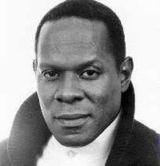 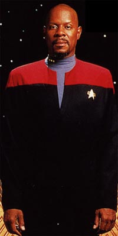 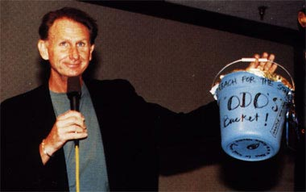 Mais algumas verdades sobre Brooks: Qual a verdade sobre a "morte" de Sisko? Existe uma enorme discusso dentro do fandom de Jornada sobre quem (dentre os produtores da srie) queria "matar" ou "no matar" Sisko ao final da srie e quais seriam os "motivos ocultos" de cada parte envolvida. Eu no vejo motivo para tanto alvoroo e nem base para isso. Que Sisko ia "transcender" ao final de "What You Leave Behind" (ltimo episdio da srie), eu j sabia desde o piloto ("Emissary"), pois isso que os "Emissrios" (e equivalentes) fazem, ao final de suas histrias. Brooks que tinha um certo problema com o fato de Sisko deixar a sua segunda esposa (Kassidy Yates) esperando o segundo filho dele, um bvio esteretipo racial para a comunidade negra. Com uma pequena mudana de dilogo (que, com a ajuda do conceito de "no-linearidade" da existncia dos Profetas, garantia o retorno de Sisko), isso foi resolvido para a satisfao de todos. Se Sisko no conseguisse se desapegar da sua existncia corprea, ele no iria conhecer "nada alm de mgoa" em sua nova vida com os Profetas, outro elemento recorrente em grandes picos. Quando Sisko se despede de Kassidy, ele est muito mais distante, como se de fato a prpria natureza de sua existncia tivesse mudado. O fato de Sisko no dizer adeus ao seu filho, pode ser racionalizado como uma preocupao por parte do capito em no dar incio a alguma espcie de obsesso em Jake, como sugerido em "The Visitor". Para falar a verdade, existem vrios "ecos" de "The Visitor" em "What You Leave Behind". O fato de a Fenda Espacial se abrir, na cena final de "What You Leave Behind", sem a passagem de nenhuma nave, tambm um belo toque. (Antes de responder s duas prximas questes, devo lembrar que todas as decises executivas de uma srie de TV visam sempre melhorar a sua audincia. A principal preocupao : no trocar qualidade por audincia fcil e respeitar o seu pblico.) Por que foi introduzida a Defiant (no primeiro episdio da terceira temporada, "The Search, Part I")? O recente e excelente artigo do Fernando Penteriche sobre a Defiant toma o grosso desta questo. S gostaria de acrescentar o seguinte: 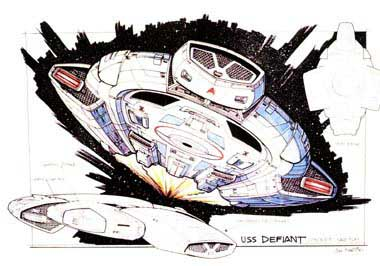 Por que Worf se juntou ao elenco da DS9 (no primeiro episdio da quarta temporada, "The Way of the Warrior")? 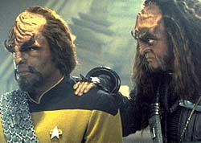 Os executivos da Paramount pediram, em uma reunio com os produtores de DS9 antes do incio da quarta temporada, por um elemento que viesse a trazer fs antigos para a srie (mas eles no disseram absolutamente nada sobre qual elemento seria este --que a postura-padro dos executivos do estdio nessas reunies). A Paramount iria vender os direitos das reprises em syndication (cinco vezes por semana) ao final da quarta temporada e queria "reenergizar" a srie para conseguir um melhor preo no mercado.Ira Behr foi para casa para tentar racionalizar o pedido em algo que fosse possvel e criativamente interessante e consistente com a srie at ento. Ele ento se lembrou de uma fala de um Fundador (posando como um comandante Romulano), no episdio "The Die is Cast", da terceira temporada, que dizia que, aps aquele momento, as nicas foras que poderiam fazer frente ao Dominion no quadrante Alfa eram a Federao e o Imprio Klingon, e mesmo essas duas foras no o seriam por muito tempo. Ira achou que deveria dar prosseguimento a essa ameaa. Ronald D. Moore gostou da idia e sugeriu o nome de Worf. Behr foi meio ctico no incio, mas acabou gostando da idia. Berman ficou contente com a idia, e os executivos tambm, tanto que autorizaram um oramento extra, dando ares de um virtual segundo piloto para o episdio duplo "The Way of the Warrior". Existe um real problema entre Berman e Ira Steven Behr? Berman ajudou a criar a srie e foi sempre o responsvel pelo programa perante a Paramount (o homem sempre teve a ltima palavra), fazendo uma ponte entre o estdio e a equipe de produtores-roteiristas. Mas de forma alguma a srie a sua viso. Berman sempre esteve envolvido em todo o processo, mas usualmente no contexto de uma pessoa que discute opes postas a mesa e no de quem as prope. A partir da quarta temporada de DS9, com a confirmao das vendas das reprises em syndication, os executivos da Paramount (satisfeitos) comearam a "dar um refresco" a Berman, que aproveitou para deixar Behr mais vontade com DS9 e comeou a se concentrar em Voyager (devido crescente presso por parte da rede UPN). Da que Berman comeou a se aproximar de Voyager e se afastar de DS9. Uma contingncia estritamente comercial, mas que foi benfica, criativamente falando, para DS9. Em se aproximando de Voyager, Berman acabou se aproximando cada vez mais de um ambicioso Brannon Braga, que viu a a sua chance de fazer definitivamente o seu nome no franchise e criar uma srie, a quinta da marca, agora conhecida como Enterprise. 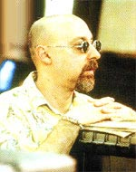 DS9 (no melhor e no pior) a viso de Ira Steven Behr. Ira sempre fez a consciente deciso de produzir uma tima srie para um reduzido nmero de pessoas em vez de produzir uma "boa srie" para um grande pblico. Ele teve bastante liberdade do estdio para fazer o que ele fez. Obviamente ele precisou ter "muito jogo de cintura" em certas ocasies, especialmente para serializar a srie, algo que o estdio sempre se mostrou contra (por que normalmente as reprises em syndication so exibidas fora de ordem).E mais: Braga (aps a sexta temporada de A Nova Gerao) teve uma oferta para a segunda temporada de DS9, que ele recusou (graas a Deus!). Por outro lado, Ren Echevarria (aps o final de A Nova Gerao) quase foi parar em Voyager em sua primeira temporada, por lealdade a Jeri Taylor. Felizmente Piller o convenceu a ir para DS9 em sua terceira temporada. Por que a equipe de produtores e roteiristas da srie saiu do franchise aps a concluso da srie? Aps a sada de Piller os roteiristas comearam a se afastar cada vez mais de Berman (ou vice-versa) e, da, de uma chance em novos projetos de Jornada. Simples assim. Acredito que tenha sido melhor para todos eles, como a conturbada passagem de Ronald D. Moore pela produo de Voyager, no comeo da sexta temporada da srie, veio a demonstrar. Existe um real problema entre Berman e o elenco de DS9? 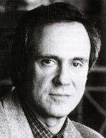 Este um boato que retorna de tempos em tempos. Parece existir de fato alguma espcie de mal-estar ou de ressentimento de alguns dos atores com relao a Berman. Mas os reais motivos dessa problemtica nunca vieram tona e "quando vieram" pareciam mais coisas sadas de algum livro sobre "conspiraes secretas".Um dos meus boatos favoritos sobre o assunto de que o episdio "Far Beyond the Stars" (da sexta temporada da srie) aproveita em sua histria informaes dos bastidores da produo da srie. Isso s especulao, mas ser que tem algum fundo de verdade? Dificilmente iremos saber. Como o relacionamento entre os produtores-roteiristas da srie? Ira Behr deu o primeiro emprego profissional como roteirista a Hans Beimler (que se juntou a DS9 na quarta temporada), na srie "Fame", e a Robert Hewitt Wolfe, na primeira temporada de DS9. Behr se tornou uma espcie de mentor de ambos e foi parceiro de escrita de Wolfe nas primeiras cinco temporadas e de Beimler nas duas ltimas de DS9. 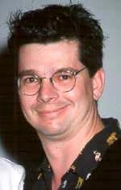 Behr tambm deu a sua opinio positiva quando Ronald D. Moore foi contratado na terceira temporada da Nova Gerao e tentou contratar Ren Echevarria tambm, na mesma poca (o que no aconteceu, pois Echevarria permaneceu como free-lancer at a quinta temporada). Cabe lembrar que Behr s participou da Nova Gerao em sua terceira temporada e deixou a srie alegando que "esta no a srie pra mim" e foi a primeira pessoa lembrada por Michael Piller quando o conceito de DS9 comeou a tomar forma.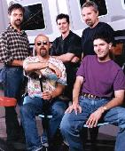 Nunca houve nenhum problema grave entre os roteiristas da srie. Peter Allan Fields e James Crocker deixaram a srie ao final da segunda temporada sem nenhum atrito, sendo que o primeiro chegou a escrever episdios como free-lancer em temporadas posteriores da srie. Michael Piller deixou a srie nas mos de Behr ao final da terceira temporada, tambm de uma forma bastante natural (como criador da srie ele se tornou consultor criativo de DS9). Robert Hewitt Wolfe deixou a srie amigavelmente ao final da quinta temporada e continuou a assistir, chegando a escrever mais um episdio como free-lancer.Ren, Ron, Ira, Hans e Robert se mantm em contato constantemente e realmente gostam da companhia um do outro. Isso era mostrado na tela, nos episdios de DS9. Como o relacionamento entre os atores da srie? A maioria dos atores de DS9 tem uma postura profissional extremamente sria e concentrada, dando um ar muito mais srio aos dias de filmagem em DS9 do que aquele das outras sries de Jornada. O que algumas pessoas confundem (erradamente) com uma atmosfera ruim de trabalho. Os relacionamentos mais fortes entre os atores so similares aos relacionamentos mais fortes entre os personagens. Brooks praticamente adotou Lofton e foi uma espcie de mentor para Farrell. Auberjonois e Shimerman so grandes amigos, idem para El Fadil e Meaney e a "inseparvel famlia Ferengi": Shimerman, Grodnchik, Eisenberg, Masterson e mesmo Lolita Fatjo (a responsvel pela pr-produo da srie e namorada de Grodnchik). Isso sem falar na amizade entre Visitor e El Fadil, que acabou at em casamento, e em outras amizades perenes. verdade que os atores de DS9 e da Nova Gerao no se davam bem? Eu ouvi falar que o ator que interpreta o Worf em A Nova Gerao no suporta o ator que faz o Worf em DS9. Em outras palavras: NO! Simplesmente uma fofoca maldosa. A lenda que relata o fato que alguns conceitos empregados em DS9 consistiram de "apropriao indbita" de algumas idias e conceitos do J.M. Straczynski (que havia oferecido "Babylon 5" Paramount algum tempo antes da estria do show) procede ou puro folclore? Eu vou guardar toda esta discusso DS9 versus "B5" para um artigo especial em 2002. Quero adiantar que sou f das duas sries e elas fazem muita falta no mundo SCIFI televisivo. As duas sries so bastante diferentes. S vou fazer uma correo sobre uma coisa que foi postada no Frum do TB recentemente. O piloto de "B5" ("The Gathering") estreou em 22 de fevereiro de 1993, o de DS9 ("Emissary") em 4 de janeiro de 1993 (mais de 45 dias antes). O primeiro episdio regular de "B5" ("Midnight on the Firing Line") estreou em 26 de janeiro de 1994, j no curso da metade da segunda temporada de DS9. DS9 foi a nica srie de Jornada que nunca ficou uma temporada sequer sozinha no ar, ou seja, sem a interferncia de suas irms. Isso foi um fator decisivo na audincia? No sei se foi um fator decisivo, mas sem dvida afetou a popularizao da srie. Ela ficou meio que espremida entre A Nova Gerao e Voyager, como uma espcie de "filha-do-meio" do franchise. Isso tambm afetou o nmero de prmios e indicaes recebidos pela srie. Houve algum ator de A Nova Gerao alm de Michael Dorn cogitado para atuar de forma regular na srie? Tivemos um grande nmero de especulaes, mas nada de concreto. No final da srie, em 1999, havia aquele sentimento de que se havia feito uma obra hermtica, sem qualquer perspectiva de continuao sob a forma de telefilmes ou no cinema? A srie acabou com um pensamento uniforme por parte de todos os envolvidos de que, a menos dos livros, aquele era o final da histria de Terok Nor. Em uma nota pessoal, eu espero que assim seja para sempre. Terry Farrell saiu da srie ao final da sexta temporada por qu? Questo salarial, desavenas com o resto do elenco ou vontade de ter novos desafios na carreira de atriz? Quando Worf foi trazido a bordo, foi natural utilizar o passado de Dax com os Klingons e construir um relacionamento entre os dois. Farrell sempre viu isso com bons olhos e o tal relacionamento levou ao casamento dos personagens (em "You are Cordially Invited", da sexta temporada). Porm um efeito colateral que Jadzia acabou se tornando cada vez mais uma companheira de aventura para Worf do que uma personagem por si. No me entendam mal, ela teve bastante tempo de tela, mesmo aps a entrada de Worf, s que o ltimo episdio realmente orientado a personagem (ou melhor, ao lado Trill da personagem) foi "Rejoined", da quarta temporada. Isso era uma coisa que incomodava Farrell. 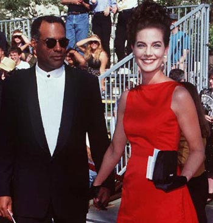 Aps seis temporadas, os contratos dos atores chegaram ao fim e uma renovao era necessria para a stima e ltima temporada da srie. Farrell no chegou a um acordo e foi a nica a deixar o programa. Da, ela ajudou a formar o elenco de apoio da popular srie "Becker", essencialmente um projeto "solo" de Ted Danson. Recentemente, Farrell e o resto do elenco de apoio fizeram uma "greve branca" para forar uma renovao de salrios mais vantajosa (curiosamente a srie "Becker" tambm produzida pela Paramount). Sua ida para "Becker" no teve um grande impacto em sua carreira cinematogrfica (na poca de sua sada de DS9, se especulava que ela poderia fazer o papel da Mulher Maravilha no cinema --um boato que nunca se tornou realidade). Os produtores usaram a voz de Farrell (falas antigas de Jadzia) no episdio "Penumbra", algo que a Paramount no acordou com a atriz, deixando-a bastante zangada. Por isso no temos nenhuma cena com Jadzia na montagem final da srie em "What You Leave Behind". Cabe esclarecer que esse problema foi entre Farrell e os executivos da Paramount, que deram luz verde para os produtores usarem tais falas. Farrell esteve na festa de encerramento de DS9, muito contente e falando muito bem da srie. Em uma nota pessoal, eu concordo com Michael Piller que Jadzia deveria ter morrido antes do que morreu: o personagem simplesmente chegou a um beco sem sada, alm de ter sido o mais problemtico personagem no comeo da srie. DS9 a melhor srie da histria do franchise? Esta foi uma noo que comeou a nascer aps o final da quarta temporada da srie, tanto na crtica especializada (SCIFI) quando na crtica leiga (no-SCIFI). Quando do encerramento da srie, revistas como "Starlog", "Cinefantastique" e a "TV Guide" (a "bblia" da TV americana) elegiam DS9 como a melhor do franchise, chamando a ateno para isso nas capas de suas edies comemorativas. Eu me recordo de ler uns 30 artigos sobre o encerramento da srie e mais da metade saudava DS9 como a "melhor Jornada de todas". Foi o prprio Michael Logan que cunhou a famosa frase: "quando olhamos pra trs vislumbramos a mais bem atuada, escrita, produzida e sobre qualquer possvel ponto de vista a melhor de todas as Jornadas". A nica dvida que eu sempre guardei sobre estas declaraes se a opinio posicionava a Srie Clssica como "hours concurs" ou a colocava como passvel de eleio tambm. Acho que a segunda opo era o caso na maioria das vezes. 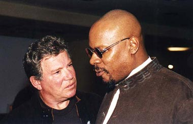 |